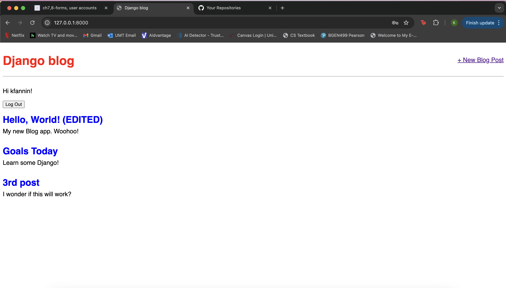

Welcome to My Projects Page!
Here are some of the projects I've worked on:
Final Project: FlippiNote

Description: Final project for CSCI258 which acts as a Collaborative Note-Taking Web App. FlippiNote is a dynamic, user-friendly web application designed to streamline collaborative note-taking. Built using Django, the app empowers users to organize and share notes efficiently. The homepage features an intuitive design, complete with a visually appealing logo, a brief description of the app's purpose, and easy access to login functionality. Key features of FlippiNote include: - User Authentication: Secure login and registration to ensure personalized experiences. - Static File Integration: Aesthetic enhancements achieved by utilizing CSS and JavaScript for a seamless user interface. - Modular Design: A scalable and organized project structure, demonstrating a solid understanding of web development principles. - Django Functionality: Implementation of advanced Django features to manage user sessions and database operations.
Technologies Used: HTML, Python, Django, JavaScript
Blog Website
Description: Blog application that allows users to read, create, edit, and delete posts. The functionality CRUD (Create-Read-Update-Delete) is the dominant pattern for most websites, and this is implemented here with a blog app featuring a homepage listing all posts and an individual page for each post. CSS was introduced for styling. In addition, chapters 6, 7, and 8 of the Django Book were particularly useful for understanding URL routing, view logic, and templates. Chapter 6 covers URL dispatching and routing, explaining how requests are mapped to view functions. Chapter 7 explores views and their role in processing requests and returning responses. Chapter 8 provides a deep dive into templates, focusing on how to use Django's template system to display data dynamically.
Technologies Used: HTML, Python, Django
Message Baord
Description: Database-backed website. Learned about relational databases, wrote Django model, performed queries, ahd manipulated using the powerful built-in admin interface. Wrote function-based and class-based views before ending with advanced tests to ensure everything worked properly.
Technologies Used: HTML, Python, Django
Company Website
Description: Built a company website while learning more about templates, class-based views, and integrating more advanced testing. Reinforced past learnings and explored what Django views, URLs, and templates can do.
Technologies Used: HTML, Python, Django
Personal Website
Description: Built a personal website containing a Homepage and an About page while learning more about Django's templates, function-based views, and testing. Learned to work with simple function-based views and templates and wrote my first tests.
Technologies Used: HTML, Python, Django
More Projects
For a complete list of my projects, visit my GitHub profile.